We’re partnering with DevCentr (on purpose)
OpenShellOrg and DevCentr are aligning hard on shells, entrypoints, and toolchain honesty — without merging into one mega-org.
If you’ve been watching both orgs and thinking “wait, these people keep finishing each other’s sentences,” yeah. That’s not an accident.
OpenShellOrg is here for shells and CLIs: SOS certification, structured pipelines, nu-require, progressive help, and the boring-but-sacred rule that the process you launched should either be the right one or stop. DevCentr is here for the practitioner side: environments, orchestration, and the full Toolchain Management story — pin, health, repair, upgrade as something an official entrypoint owns, not a tribal afterthought you discover after a native-module ABI meltdown.
Same enemy. Different altitudes.
We’ve written that down properly now:
-
Entrypoint Dispatch lives in shell-architecture — auto-install and re-exec the right host/version at the shell boundary.
-
Toolchain Management Pattern stays canonical on the DevCentr docs side.
-
Cross-links both ways so nobody has to guess which org “owns the essay.”
Figure 1. Official toolchain architecture

Figure 2. Sibling ownership
We’re not merging. Product orchestration and industry standards need different issue trackers and contribution norms. We are treating each other as the obvious sibling link in footers, docs, and news — because users shouldn’t have to archaeology their way to the other half of the argument.
Come hang out: devcentr.org, docs.devcentr.org, and our own docs hub. If you build CLIs, start with honesty at argv[0]. If you build environments, start with a control plane that doesn’t pretend engines is a vibe.